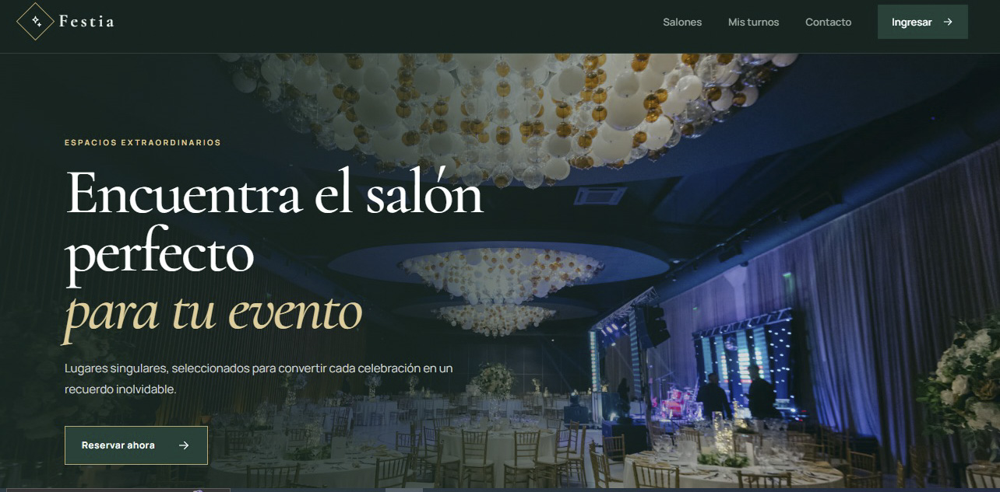

Festia
Sistema de reservas de salones y eventos con validación de superposición de turnos (HTTP 409), modelo entidad-relación normalizado, API REST con disponibilidad mensual y scripts de carga inicial.
Mi rol: Desarrollo backend, modelado de base de datos y relevamiento de requerimientos.
- Python
- SQL
- Supabase
- API REST